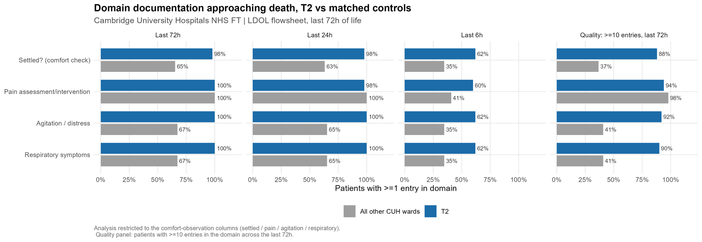
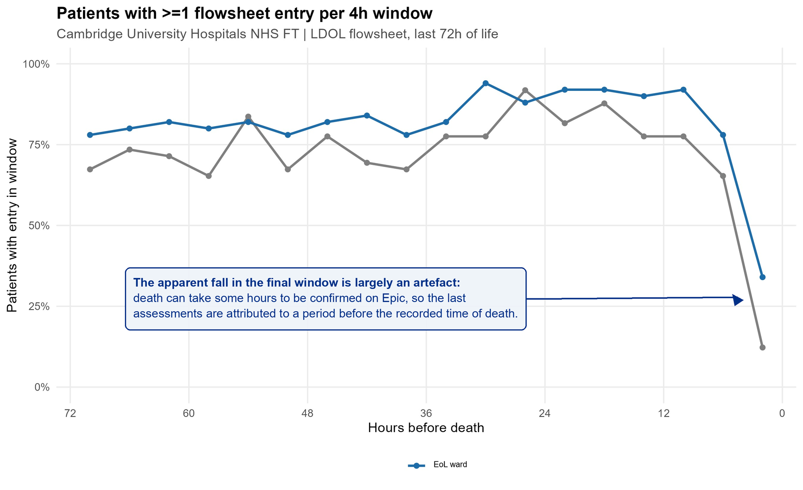
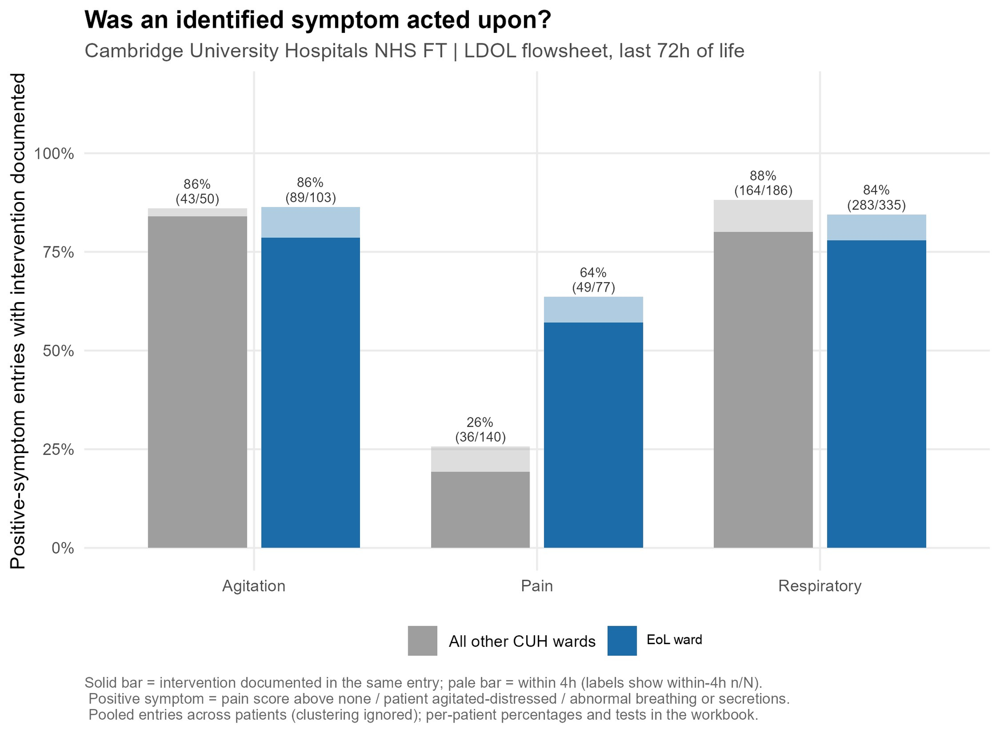
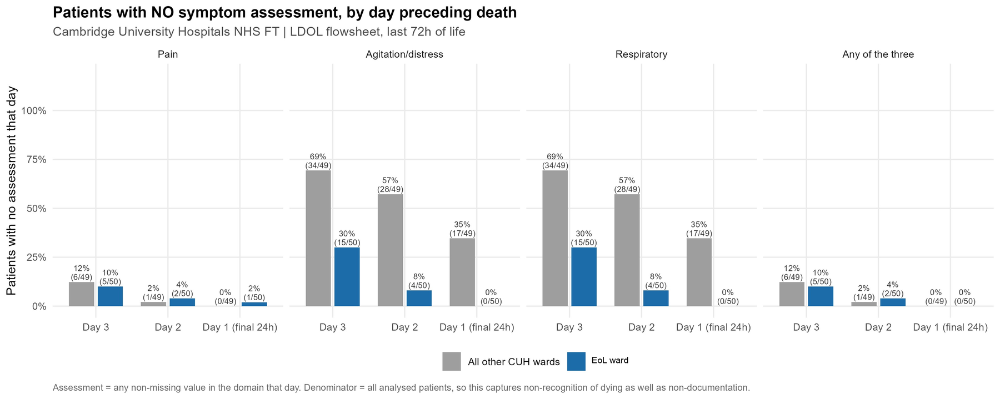

No one dies unassessed: comfort documentation in the last days of life on a dedicated end-of-life ward versus matched wards
Full results of the first-cycle audit of last-days-of-life comfort observation on the end-of-life care ward against Trust standard PRN-12613, with the charts from the audit report. Cambridge University Hospitals NHS Foundation Trust; registered service evaluation PRN8341.
Results against the audit standards (ward, n = 50)
| Standard | Target | Ward result |
|---|---|---|
| Last days of life care plan in place | 95% | 100% (50/50) |
| Each comfort domain documented in the last 72 hours | 100% | 98 to 100% |
| Comfort observation at least four-hourly (median coverage) | 100% | 90% |
| Each comfort domain documented in the last 6 hours | 100% | 60 to 62% |
| Pain reviewed in the last 6 hours of life | 80% | 60% (30/50) |
| Identified pain acted on within 4 hours | 100% | 64% (49/77 entries) |
The final-hours figures are largely a quirk of the data rather than a care gap: death can take some hours to be confirmed on Epic, and the analysis uses that recorded time, so the last assessments are attributed to a period before the recorded death. The six-month re-audit will use the observed time of death.
Charts from the audit report




What happens next
Four actions with named owners and a target date of 1 October 2026: sustain at least four-hourly comfort observation to the point of death, with a final-hours prompt on the electronic flowsheet; link identified pain to a prompt, documented intervention; extend the ward's comfort-observation standard to dying patients before transfer and on other wards through education and the palliative referral pathway; and re-audit at six months, completing the nutrition, hydration, oral care and relatives standards through the whole-cohort baseline audit.